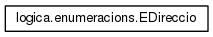
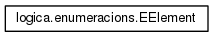
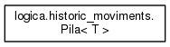
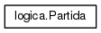
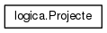

THE PACMAN RETURS
1.0
Projecte de programació
Pàgina principal
Classes
Llista de Classes
Índex de Classes
Jerarquia de Classes
Membres de Classes
Tot
Classes
Funcions
Variables
Jerarquia de Classes
Veure la jerarquia textual de la classe





Generat a Dj Mai 28 2015 14:23:58 per a THE PACMAN RETURS per
1.8.8


 1.8.8
1.8.8